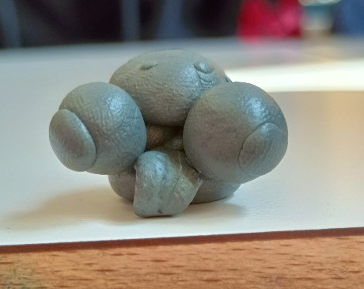

Incontra Poldo
l'Occhialuto
Misterioso. Rotondo. Dotato di sfere visive sproporzionate.

Chi si cela dietro quelle sfere?
Visione Panoramica
I tre enormi globi non sono occhiali, sono sensori per captare ogni forma di affetto nel raggio di 10km.
Struttura Argillosa
Nasce dall'antica arte della manipolazione molecolare. La sua densità rivela una saggezza profonda.
Energia Quantica
Non ha bisogno di mangiare o bere, assorbe direttamente i raggi cosmici attraverso il naso prominente.
Il fascino dell'imperfezione
Nato da mani abili ma imprevedibili, Poldo rappresenta l'essenza stessa della creatività spontanea. Non farti ingannare dalla sua forma buffa: la sua saggezza millenaria è racchiusa in quella plastilina grigia.